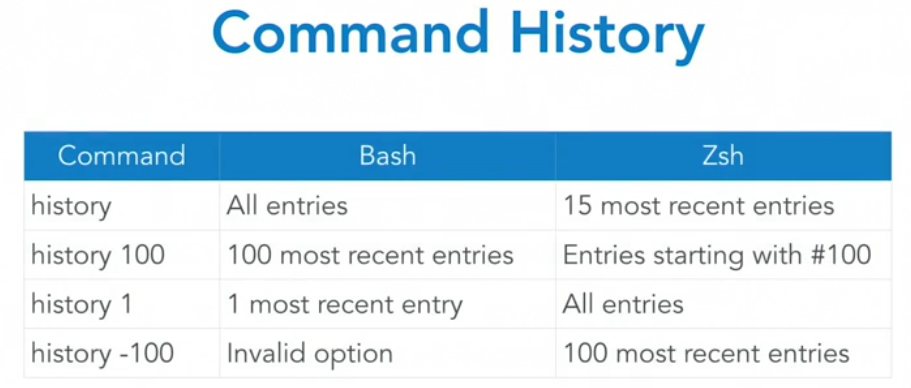

history
one way of finding a command is with the history command
the history commands are stored in:
/Users/tylertomani/zsh_history
each shell has its own history
to display history type:
cat .zsh_history
the history command is better detailed for the user, the .zsh_history is really for unix's purposes
when history is needed use the history command instead
the bash and zshell gives us a couple options
